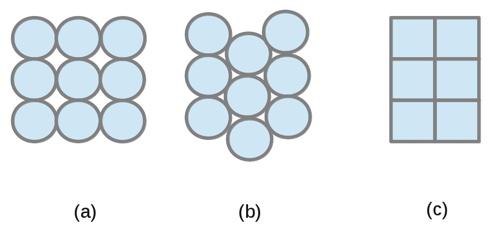
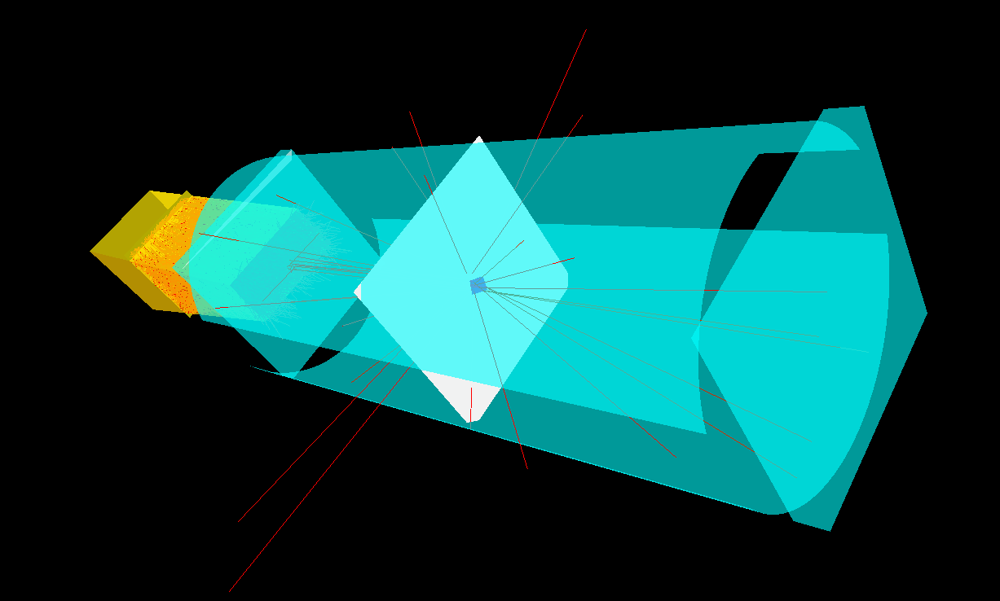

The detector module simulates a basic 3D detector array, which may have a rectangular or cylindrical geometry. The coordinate system (x,y,z) is defined by the preceding module (the origin being e.g. the centre of a sample) and is not altered by the detector module. The centre of the detector is given in spherical coordinates, with ϑ [0;180°] the angle between the position vector and the +x-axis and φ [0;360°] the angle between the projection of the position vector to the yz-plane and the +y-axis (ϑ>0;φ=0 points along the +y-axis, ϑ>0;φ=90° along the +z-axis, a.s.o.). The distance (length of the position vector pointing from the origin to the detector surface centre) has also to be specified as well as the total height, width and thickness of the detector and the rows, columns and layers defining the size and number of the position sensitive areas.
Overall detector geometry
The centre of a rectangular (flat) detector can be every
point in space and is defined by the distance and the
angles ϑ and φ. The surface can be incline w.r.t. the
position vector by the angles ϑ_n and φ_n defining the
direction of the surface normal in the coordinate system which has the detector
position as x-axis. The surface is perpendicular to the position
vector for ϑ=0°.
The cylindrical detector is restricted to three orientations (the cylinder axis
will always point along one of the axes of the coordinate system) and the centre (=middle of the cylinder arch) of this detector type always
lies in the 0-plane perpendicular to the cylinder axis (i.e. z=0 for a cylinder
around the z-axis). The arch centre is defined with the angles described
above and the cylinder centre itself is always
fixed at the origin position (==> inner cylinder radius = distance to
detector arch centre).
Due to these restrictions, the following constraints apply to φ and ϑ
for a cylinder axis along the
- z-axis: φ=0° or 180° defines +y or -y direction
- y-axis: φ=0° or 180° defines +z or -z direction
- x-axis: ϑ=90° (will be set to 90° if other input is given), only
φ defines the arch position
The extension of the detector in direction of the cylinder axis is given by the
input variable height for all cylinder orientations, and the covered
angular range is calculated from the width and the distance
of the detector from the origin (= cylinder radius) . The angular range is
then bordered by (detector surface centre +-width/(2*radius)).
Tube detector
A flat detector can be build from horizontally or vertically arranged tubes
with circular or rectangular cross-sections. In the flight path of the neutron
through the detector, only the detector volume containing
active material is taken into account in the calculation of interaction
probability and the scattering position; dead zones between circular tubes as
well as the tube walls (specified by the wall thickness) are treated as
vacuum. Different layers of detector tubes can be shifted against each other
(see fig. 1(b)).
The tubes option is not possible for cylindical geometry.

Interaction probability
First of all it is tested whether the neutron intersects the detector; if not, the
neutron is discarded. If the neutron intersects the detector, the flight path
through the detector is determined and the neutron will be written to the
output accordingly. The position of interaction along the flight path of
the neutron in the detector will be given by a Monte Carlo choice and the
neutron's probability weight is multiplied by the interaction probability
calculated from the total scattering cross-section σ, the particle density
N and the length until scattering l as
Nσ ⋅ exp(-Nσ ⋅l) ⋅ L/Nrep ⋅
εmod (1).
The total length in the detector L divided by the number of repetitions Nrep
is used as normalization and represents the distance over which the probability is assumed to be constant.
εmod is an optional modifyer that can be used to take
losses due to e.g. secondary particle production into account, since σ
contains only the interaction of neutrons with the absorber/converter
material. The wavelength dependence of this interaction is calculated by a
linear approximation from the tables at NNDC
(http://www.nndc.bnl.gov/sigma/index.jsp?as=10&lib=endfb7.1&nsub=10). Currently
implemented are 3He, 10B
and 6Li. The particle density N is calculated from either gas
pressure and temperature in case of 3He and BF3, or
directly given as input variable atom density for solid materials.
If other is chosen as absorber/converter material, a wavelength
independent interaction probability is calculated from εmod,
which then serves not as a modifyer but gives the overall efficiency.
Alternatively, the wavelength-dependent detection efficiency can be given via
an input file. In this case, the choice of active detector material will be
ignored and the efficiency taken from this file, hence it is independent of the path of the
neutron through the detector material.
Detector signal
In the usage normal mode, the position of detection and the direction between
the centre of the sample and the point of detection are written. This point of
detection given as detector signal is a 3-dimensional pixel center
determined by the number of rows, columns and layers in combination with the detector
height, width and thickness. These "pixels" can represent either a physical
pixel size (e.g. a tube diameter) or a digital pixel size caused by the
readout.
If a non-zero resolution is given in either dimension, the
interaction point of the neutron with the detector is smeared by a gaussian
function before being shifted to the pixel center. (The standard deviation of
this gaussian is calculated from the FWHM given as input.) A spatial
uncertainty caused by e.g. the extension of the secondary particle cloud can
thus be taken into account.
All this as well as the probability calculation may be deactivated by
the monitor only option, i.e. the true interaction point is
written and the probability
weight of the neutron is not altered by the detector module, so the neutrons
are registered always with efficiency 1 and each point of the flightpath
within the active detector material is considered with equal chance to be
the point of detection. (The monitor option might lead to better statistics
because of the deactivation of the realistic detector thickness MonteCarlo.)
In the monitor only option, the incoming flight direction and the interaction
point with the detector are written to the output.
In the grid off mode, the neutron detection position is not
shifted to the 3-dimensional pixel center. Other than with the monitor only
mode, the resolution is taken into account; if the resolution is set to 0 in
all dimensions, the grid off mode yields the same output position as
the monitor only mode but with the neutron weight changed according to
the detection probability. The neutron direction is set to the normalized
vector of the written position (like in the usage normal mode).
Detector array
A complex detector shape can be build out of several detector parts by using
the detector module several times in a row and ticking the array box for
all but the last detector part. The first and intermediate detector parts will
then pass neutrons that don't intersect with them on to the next detector
module. The last part of the detector array discards neutrons that have not been
detected by any of the detector parts. Neutrons detected in different
sub-detectors of an array can be distinguished by usage of
the add color value. Note that this adds the given value to the color
property of the neutrons to allow distinction on several levels; if only
a seperation of different detector parts is needed, make sure the color of
incoming neutrons is the same (e.g. set it to 0 with the module spin_reset).

Output file
If a filename is given as Output filename, a file containing the 3D
position, time, probability weight and colour of each neutron will be written (event
mode output). In a detector array, only the last detector writes this file, which then contains the
neutrons detected in all sub-detectors. (The sub-detector in which a neutron
has been detected can be distinguished by use of the add color option in
each detector module.)
--------------------------------------
!!!!! Please make sure that no neutron from the input stream starts already
within the detector (having a finite thickness) itself. In case of cylindric geometry:
All neutrons initially have to lie within the cylinder of radius = distance to
detector. !!!!!!
--------------------------------------
Input parameters:
array (first or intermediate part)
Tick this box if other detector modules follow. All neutrons are then passed to
the following module, otherwise neutrons not intersecting this detector part
will be discarded. Hence don't tick this box when using a single detector module.
geometry
The geometry parameter specifies the overall geometry of the detector,
which can either be flat (i.e. rectangular)
or cylindrical.
type
The detector can be either a tube or an area/volume
detector. A tube detector is only possible in combination with an overall flat
detector geometry.
usage
If the usage option monitor only is selected, the detector geometry
is only used as a monitor, i.e. the weight of the trajectory and the flight
direction are unchanged, the intersection point with the detector is
written to the output. Otherwise thickness, efficiency and wavelength are used
to calculate a count rate that can be expected in experiments. If the grid
off option is chosen, the position of detection is not shifted to the
nearest pixel center, but resolution effects are taken into account. (See
section Detector signal above.)
repetition
'repetition' specifies the number of neutron data sets
generated for each trajectory arriving at the detector, i.e. the detection
process is repeated 'repetition' times. This can improve statistics, but be
aware that these are not independent events.
detect color
If a value other than -1 is given, only neutrons with that color can be
detected, other neutrons are discarded. -1 means all neutrons are treated.
minColor
If a value other than -1 is given, only neutrons with a color greater or equal can be
detected, other neutrons are discarded. -1 means all neutrons are treated.
maxColor
If a value other than -1 is given, only neutrons with a color less or equal can be
detected, other neutrons are discarded. -1 means all neutrons are treated.
add color
If a value other than -1 is given, the colour of detected neutrons is
increased by the given value. -1 means no change to the colour.
exclsuive counts
If activated, only those neutrons which have been detected are transferred to the subsequent modules.
phi
Angle phi [0;360 deg] of the middle of the detector surface, i.e. the angle
between the projection of the position vector to the yz-plane and the +y-axis.
For cylindrical geometry and a cylinder axis along the z or y axis, phi must be 0° oder 180°!
theta
Angle theta [0;180 deg] of the middle of the detector surface. Theta
is defined as the angle between the position vector (pointing from the origin to the detector surface centre) and the +x-axis. For cylindrical
geometry and a cylinder axis along the x axis, theta is set to 90°
(i.e. the position of the cylinder arch is solely defined by phi).
distance [cm]
Distance of the centre of the detector to the origin (0,0,0)
in cm. In case of a cylindrical detector this is the inner cylinder radius.
height [cm]
Height of the detector in cm. In cylindical geometry, the height is
defined as the extension along the cyl. axis.
width [cm]
Full width of a flat detector in cm. In case of a cylindrical detector
it is the length of the cylinder arch under consideration.
thickness [cm]
Thickness of the detecting material in cm.
number of rows
Number of rows partitioning the detector height.
number of columns
Number of columns partitioning the detector width.
number of layers
Number of layers partitioning the detector thickness.
hor. resolution
Horizontal resolution: FWHM in cm in the width dimension, leading
to a gaussian uncertainty in the position signal (in addition to
uncertainties caused by pixel size and parallax effect). 0 means no
uncertainty (i.e. perfect resolution).
vert. resolution
Vertical resolution: FWHM in cm in the height dimension, leading
to a gaussian uncertainty in the position signal (in addition to
uncertainties caused by pixel size and parallax effect). 0 means no
uncertainty (i.e. perfect resolution).
resolution in x
Resolution in neutron flight direction: FWHM in cm in the thickness dimension, leading
to a gaussian uncertainty in the position signal (in addition to
uncertainties caused by pixel size and parallax effect). 0 means no
uncertainty (i.e. perfect resolution).
efficiency modifyer
Factor to modify the efficiency calculated from the interaction cross-section
with the chosen material, e.g. for losses due to secondary particle detection
etc. If 'other' material is chosen, this value is used as wavelength independet constant
efficiency and has to be within [0;1[. Otherwise, this factor can be
larger than 1 (since VITESS 3.2) to account
for cases in which only a fraction of the real detector is simulated, and it
is also taken account if the efficiency is read from an input file. A value of 1 means no modification to the efficiency.
lambda efficiency file
Input file containing two columns with wavelength and efficiency. If
such a file is given, the effieciency will be taken from there independently
of the choice of absorber/converter type and independtly
of the neutron path through the detector material.
absorber/converter type
Material interacting with the incoming neutrons, the total scattering
cross-section of which determines the detection efficiency. If other
is chosen, a fixed efficiency of value efficiency modifyer is
used. The choice of material is ignored if an efficiency file is given. If a
solid material is chosen, the neutron path length through the detector (used
to calculate the efficiency) will
be scaled by (solid layer thickness / thickness).
gas pressure or solid layer thickness
The interpretation of this input variable depends on the choice
of absorber/converter type: gas pressure in bar for gaseous material,
or thickness of the solid material in cm (primary interaction).
gas temperature or atom density
The interpretation of this input variable depends on the choice
of absorber/converter type: temerature of gas in K for gaseous material,
or atom density of particles interacting with the neutrons in solid material
(the particle density N in formula (1) above).
Special input parameters for tube detector:
tube orientation
Horizontal (vertical) tube orientation means the axes of the tube
cylinders are along the width (height) dimension. Since the tubes are
symmetric, in a detector with horizontal (vertical) tubes,
height/NRows (width/NColumns) is the tube diameter and
has to be equal to thickness/NLayers.
tube cross-section
The tube cross-section can be circular (as in fig. 1 (a,b)) or
rectangular (as in fig. 1(c)).
wall thickness
The detector volume occupied by tube walls is treated as vacuum
(i.e. not contributing to neutron detection).
layers shifted
Tick this box if the tube layers are shifted against each other as
schematically drawn in figure 1(b). Two additional rows or columns will be
added to increase the detector height or width by two tube diameters to
ensure the whole intended area is still covered.
Special input parameters for a flat detector:
phi_n
Angle phi [0;360 deg] of the detector back surface normal (pointing away
from the sample) defined analog to the angle phi
of the detector position. Phi_n is defined in a coordinate system with
origin at the center of the detector and axes parallel to the detector axes,
obtained from the original coordinate system by rotating the x-axis onto the
detector position vector. Phi_n is then the angle between projection of
surface normal onto (y',z') plane and +y' axis, where y' and z' are y and z
after rotation of x onto the position vector.
theta_n
Angle theta [0;90 deg] of the detector back surface normal (pointing away
from the sample) defined analog to the angle theta
of the detector position (but constrained to 90° such that detector front and back
side cannot be interchanged). Theta_n is defined in a coordinate system with
origin at the center of the detector and axes parallel to the detector axes,
obtained from the original coordinate system by rotating the x-axis onto the
detector position vector. Theta_n is the angle between the surface normal and
the new +x axis (i.e. between surface normal and position vector). Hence the surface is perpendicular to the position vector for theta_n=0° (default).
Special input parameters for a cylindrical detector:
axis orientation
Choose the orientation of the cylinder axis as z, y or x
axis. Constraints on theta and phi following from this choice are explained
above (section Overall detector geometry).
constant phi
Tick this box if the pixel size in the cylinder height dimension is not
uniformely thickness/NRows, but variable such that a constant
angular width δφ defines the pixel size.
Detector output
Output filename
Name of file to which detector output is written. Ignored for first or
intermediate parts of an detector array, for which the last sub-detector
writes the combined detector output. In event mode (default and currently
only), the 3D position, time, probability weight and colour of each detected neutron are written.
Last modified: Tue May 8 17:08:06 MET DST 2001